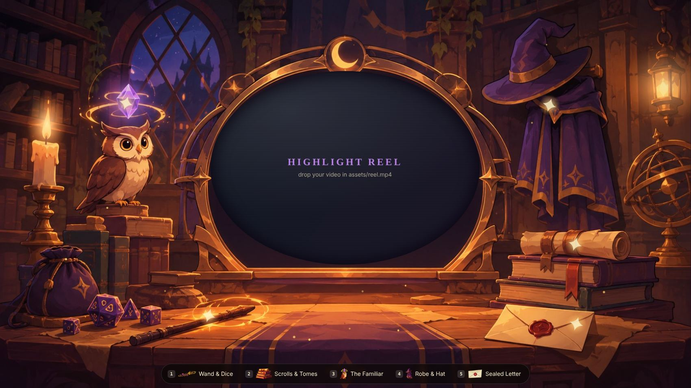

Concept B - with your painted art
The Wizard's Table (painted)
The wizard's table built from the scene and object art you generated. The reel plays inside the oval mirror frame, the objects glow on hover, and the cut-out art shows up as icons in the menu and panels.
- Closest to a finished look
- Swap any image later without touching the code logic
- Reel is an oval, so keep the key action centered in the video